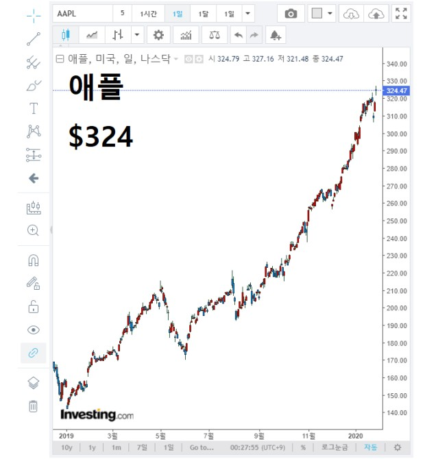

- 돈
- 정의란 무엇인가
돈
돈이 많을수록 더 행복할것이다
가난해도 행복할수있다고는 생각한다.
내 어린시절 가난을 경험해봤고 그 시절이 힘들긴 했어도 요즘보다 훨씬 행복했던 기억이 많았기에 공감은 한다.
다만 되돌아보면 힘들었던건 가난에 의한 직접적인 영향이 아니라
가난에 의한 사랑하는 내 가족이 힘들어하는 모습을 보면서도 내 자신이 할수있는게 아무것도 없다는것에대한 힘듬이였다.
돈이 많을수록 더 행복해질것이다.
그럼 돈이란건 어떻게 해야 많아질까.
일단 돈을 벌어라. 어떤 형식이든 상관없이 종잣돈 모아서 투자를 하라
생각해보라. 내가 애플을 차릴수도 삼성을 차릴수도 없다.
하지만 애플도 삼성도 일궈낼 능력이 안되지만 일원이 될순있지않는가.
종잣돈을 굴리다 보면 자전거가되고 자동차가되고 비행기가 되고 우주선이 될것이다.

돈을 은행에 고이 모셔놓는 것은 남들 다 걷고 뛰고 심지어 기어서라도 앞으로 나아가고있는데
혼자 가만히 서있는 것과 같다.
물론 굴리다 오히려 뒤로 퇴행할수도있다. 돌부리에 넘어질수도있다.
그것이 두렵다면 평생 제자리에 서있는것도 하나의 방법일것이다.
하지만 명심하라 당신이 가만히 서있는 지금 이순간에도
다른 사람들과의 격차는 점점 더 벌어지고있다는것을